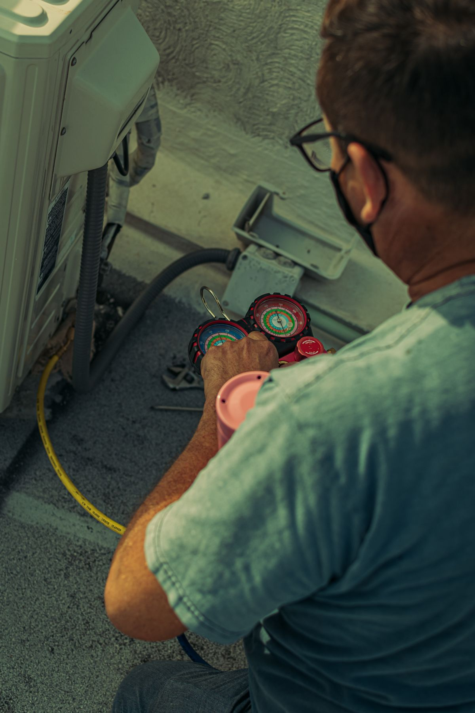
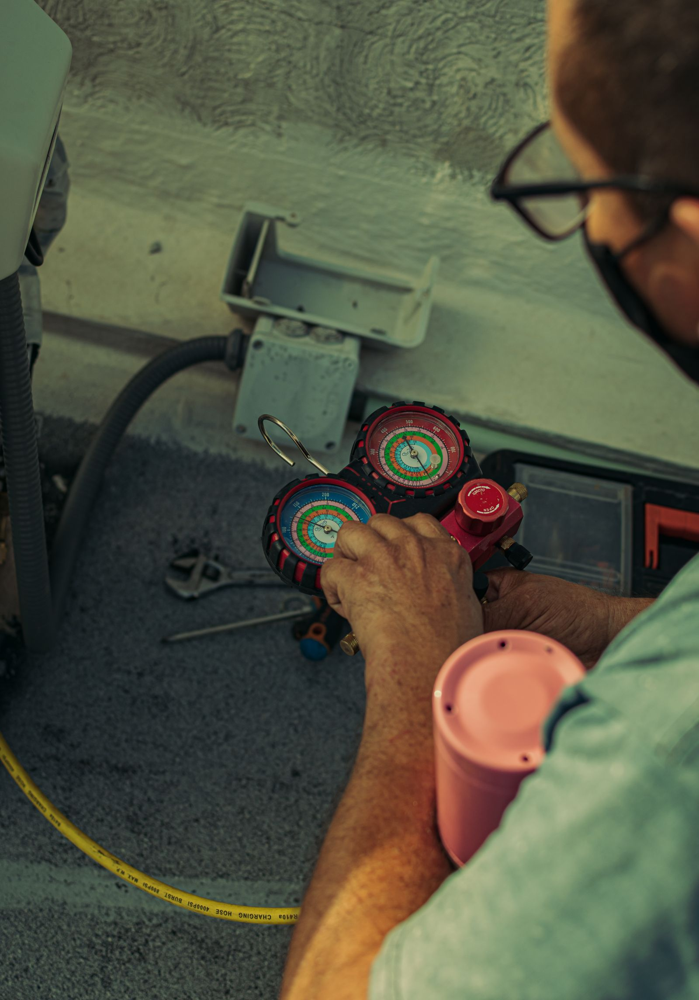
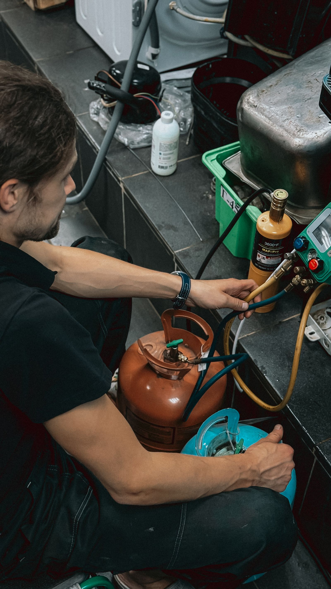

نبيع ونركّب وحدات جديدة، ونستبدل أو نشتري الوحدات القديمة، ونوفر كل ما يلزم لإبقائها تعمل: ثماني خدمات ينفّذها فنيّونا بأنفسهم.
وحدات جديدة من الماركات التي نثق بها، بأسعار عادلة وتركيب يدوم. توريد فقط، أو توريد وتركيب. نحدد حجم النظام حسب المساحة وحمل حرارة الكويت، لا حسب الكتالوج.

المكيف الذي تجاوز ثماني إلى عشر سنوات يستهلك كهرباء أكثر بكثير من وحدة إنفرتر جديدة، ويتعطل عندما تحتاجه أكثر. نفحصه بصراحة، وعندما يكون الاستبدال هو الأصح ننجز العمل كله في زيارة واحدة.

شغّالة أو معطّلة، نشتري المكيفات المستعملة من المنازل والمكاتب والعمارات في جميع أنحاء الكويت. بعها نقداً، أو ضع قيمتها في وحدة جديدة.

للفلل والمكاتب والمعارض والمباني متعددة الطوابق حيث تحتاج غرف كثيرة إلى تحكم مستقل من نظام واحد عالي الكفاءة.

الدكت الجيد هو الفرق بين غرفة باردة وزاوية باردة. نصنّع ونعزل وننظّف أنظمة الدكت للمباني الجديدة والتجديدات.

زيارة صيانة مجدولة تكلّف أقل بكثير من عطل في أغسطس. عقودنا تبقي الوحدات نظيفة وفعّالة ومغطّاة.

عندما يتوقف التبريد، نأتي ونشخّص ونصلح بقطع أصلية. خدمة الطوارئ بعد ساعات العمل متاحة طوال الصيف.

قطع أصلية وبجودة المصنّع متوفرة في المخزون، لفنيّينا ولمقاولين وفرق صيانة آخرين.

إجابات واضحة عن حجم المكيف، والفرق بين السنترال والسبليت، والصيانة والإصلاح في الكويت.
كقاعدة عامة، حرارة الكويت تحتاج نحو طن تبريد واحد لكل 12 إلى 15 متراً مربعاً، وأكثر للأدوار العليا والغرف المواجهة للغرب والنوافذ الكبيرة. نؤكد الحجم بمعاينة الموقع قبل التسعير، حتى لا تدفع ثمن وحدة أكبر من اللازم أو تعاني من وحدة أصغر من اللازم.
مكيف السبليت يبرّد غرفة واحدة بوحدة داخلية وأخرى خارجية خاصة بها. التكييف السنترال (المركزي) يستخدم وحدة مخفية أو باكج واحدة لتبريد عدة غرف عبر الدكت، أما نظام VRF فيشغّل وحدات داخلية كثيرة من وحدة خارجية واحدة مع تحكم مستقل لكل غرفة. نركّب ونصون الأنواع الثلاثة.
مع غبار الكويت وموسم التبريد الطويل، يجب تنظيف الفلاتر شهرياً وصيانة الوحدة بشكل احترافي كل ثلاثة إلى أربعة أشهر، مع فحص شامل قبل الصيف. عقد صيانة التكييف السنوي يجدول ذلك لك.
نعم. نشتري وحدات السبليت والشباك والكاسيت والمخفي والباكج وVRF المستعملة من أي ماركة وأي عمر، شغّالة أو معطّلة. أرسل صورة للوحدة ولوحة بياناتها لتحصل على سعر في اليوم نفسه. ندفع نقداً أو نمنح خصم استبدال على وحدة جديدة، ونفكّ الوحدة وننقلها مجاناً.
إذا كان عمر الوحدة أقل من ثماني سنوات والعطل في المكثف أو موتور المروحة أو تسريب غاز، فالإصلاح عادةً يستحق. أما إذا كانت أقدم، أو تحتاج كمبروسر، أو تعمل بغاز R22، فوحدة الإنفرتر الجديدة تسترد ثمنها عادةً خلال صيفين إلى ثلاثة من توفير الكهرباء، ونخصم قيمة وحدتك القديمة من السعر.
نعم. فنيّونا يصلحون وحدات السبليت والشباك والكاسيت والمخفي والباكج وVRF من جري وميديا وإل جي وسامسونج ويورك وكاريير ومعظم الماركات الأخرى، ونحتفظ بالكمبروسرات والمواتير ولوحات التحكم وغاز التبريد في المخزون.
نعم. نوفر خدمة طوارئ على مدار الساعة طوال الصيف، مع أولوية في الاستجابة لعملاء عقود الصيانة.
أرسل لنا صورة للوحدة أو أبعاد الغرفة وسنوصي بالخطوة الصحيحة ونسعّرها، بما في ذلك قيمة وحدتك القديمة.